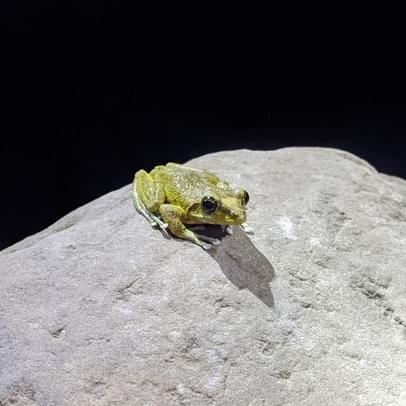
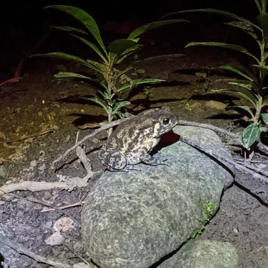
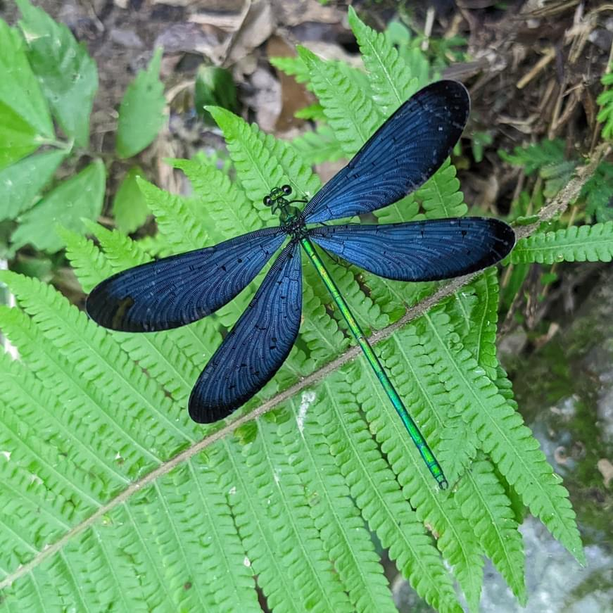
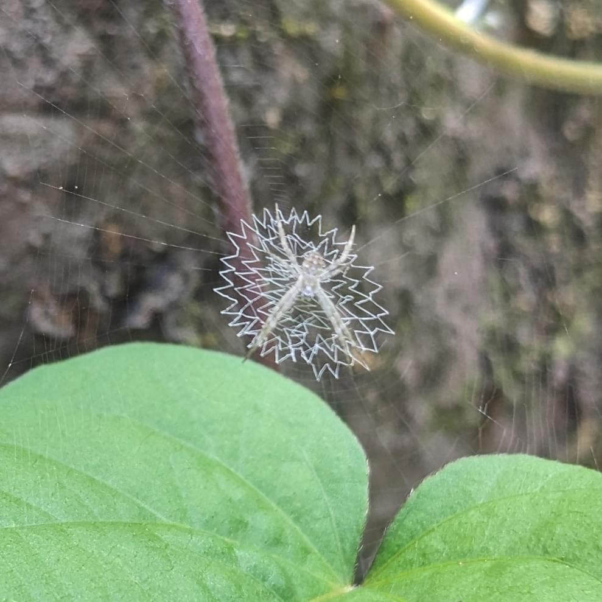

會動ㄉ物
卵一般產於水中，孵化成蝌蚪，用鰓呼吸，經過變態，成體主要用肺呼吸，但多數皮膚也有部分呼吸功能
蛙體形較苗條，多善於游泳
褐樹蛙

太田樹蛙
布氏樹蛙
澤蛙
花狹口蛙
小雨蛙
蟾蜍多在陸地生活，因此皮膚多粗糙，大部分蟾蜍耳後有毒腺，分泌毒性分泌物，可以製作中藥
黑眶蟾蜍

有著碩大的複眼、兩對強而有力的透明翅膀，與及修長的腹部
身體扁平粗壯，兩側複眼距離較近，甚至連接；停棲時翅膀平展至兩側，「蜻蜓點水」是產卵動作
慶褐蜻

鼎脈灰蜻
善變蜻蜓
紫紅蜻蜓
薄翅蜻蜓
身體纖細，頭部似啞鈴狀，兩側為明顯的複眼，停棲時多數會將翅疊合在一起
白痣珈蟌

中華珈蟌
短腹幽蟌
有著碩大的複眼、兩對強而有力的透明翅膀，與及修長的腹部
常在跨小徑及類似的地方紡織其半公尺以上的大輪形網，然後把自己掛在其中心等待獵物來到
中形金蛛
若蛛

腳上的毛可在光滑表面移動，頭胸部是方形，善於跳躍，又稱跳蛛，一般不織網，但能吐絲，預備跳下時先黏上一根絲防止墜落。
弗氏紐蛛
NOTE
2022/06/26 與溪
蜻蜓、蟋蟀、翠鳥、蝸牛